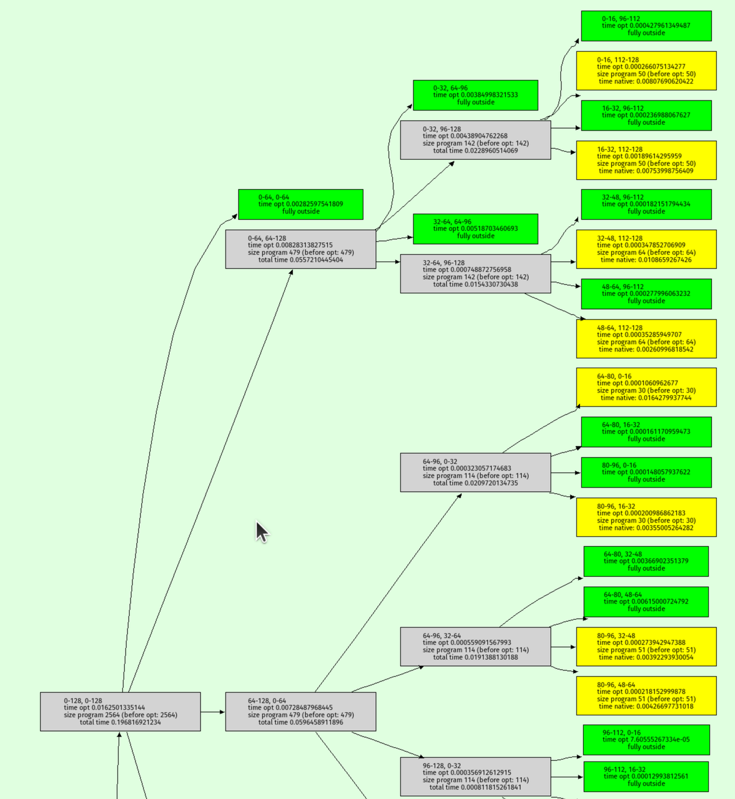

Doing the Prospero-Challenge in RPython
Recently I had a lot of fun playing with the Prospero Challenge by Matt Keeter. The challenge is to render a 1024x1024 image of a quote from The Tempest by Shakespeare. The input is a mathematical formula with 7866 operations, which is evaluated once per pixel.
What made the challenge particularly enticing for me personally was the fact that the formula is basically a trace in SSA-form – a linear sequence of operations, where every variable is assigned exactly once. The challenge is to evaluate the formula as fast as possible. I tried a number of ideas how to speed up execution and will talk about them in this somewhat meandering post. Most of it follows Matt's implementation Fidget very closely. There are two points of difference:
- I tried to add more peephole optimizations, but they didn't end up helping much.
- I implemented a "demanded information" optimization that removes a lot of operations by only keeping the sign of the result. This optimization ended up being useful.
Most of the prototyping in this post was done in RPython (a statically typable subset of Python2, that can be compiled to C), but I later rewrote the program in C to get better performance. All the code can be found on Github.
Input program¶
The input program is a sequence of operations, like this:
_0 const 2.95 _1 var-x _2 const 8.13008 _3 mul _1 _2 _4 add _0 _3 _5 const 3.675 _6 add _5 _3 _7 neg _6 _8 max _4 _7 ...
The first column is the name of the result variable, the second column is the
operation, and the rest are the arguments to the operation. var-x is a
special operation that returns the x-coordinate of the pixel being rendered,
and equivalently for var-y the y-coordinate. The sign of the result gives the
color of the pixel, the absolute value is not important.
A baseline interpreter¶
To run the program, I first parse them and replace the register names with indexes, to avoid any dictionary lookups at runtime. Then I implemented a simple interpreter for the SSA-form input program. The interpreter is a simple register machine, where every operation is executed in order. The result of the operation is stored into a list of results, and the next operation is executed. This was the slow baseline implementation of the interpreter but it's very useful to compare against the optimized versions.
This is roughly what the code looks like
class DirectFrame(object): def __init__(self, program): self.program = program self.next = None def run_floats(self, x, y, z): self.setxyz(x, y, z) return self.run() def setxyz(self, x, y, z): self.x = x self.y = y self.z = z def run(self): program = self.program num_ops = program.num_operations() floatvalues = [0.0] * num_ops for op in range(num_ops): func, arg0, arg1 = program.get_func_and_args(op) if func == OPS.const: floatvalues[op] = program.consts[arg0] continue farg0 = floatvalues[arg0] farg1 = floatvalues[arg1] if func == OPS.var_x: res = self.x elif func == OPS.var_y: res = self.y elif func == OPS.var_z: res = self.z elif func == OPS.add: res = self.add(farg0, farg1) elif func == OPS.sub: res = self.sub(farg0, farg1) elif func == OPS.mul: res = self.mul(farg0, farg1) elif func == OPS.max: res = self.max(farg0, farg1) elif func == OPS.min: res = self.min(farg0, farg1) elif func == OPS.square: res = self.square(farg0) elif func == OPS.sqrt: res = self.sqrt(farg0) elif func == OPS.exp: res = self.exp(farg0) elif func == OPS.neg: res = self.neg(farg0) elif func == OPS.abs: res = self.abs(farg0) else: assert 0 floatvalues[op] = res return self.floatvalues[num_ops - 1] def add(self, arg0, arg1): return arg0 + arg1 def sub(self, arg0, arg1): return arg0 - arg1 def mul(self, arg0, arg1): return arg0 * arg1 def max(self, arg0, arg1): return max(arg0, arg1) def min(self, arg0, arg1): return min(arg0, arg1) def square(self, arg0): val = arg0 return val*val def sqrt(self, arg0): return math.sqrt(arg0) def exp(self, arg0): return math.exp(arg0) def neg(self, arg0): return -arg0 def abs(self, arg0): return abs(arg0)
Running the naive interpreter on the prospero image file is super slow, since it performs 7866 * 1024 * 1024 float operations, plus the interpretation overhead.
Using Quadtrees to render the picture¶
The approach that Matt describes in his really excellent talk is to use quadtrees: recursively subdivide the image into quadrants, and evaluate the formula in each quadrant. For every quadrant you can simplify the formula by doing a range analysis. After a few recursion steps, the formula becomes significantly smaller, often only a few hundred or a few dozen operations.
At the bottom of the recursion you either reach a square where the range analysis reveals that the sign for all pixels is determined, then you can fill in all the pixels of the quadrant. Or you can evaluate the (now much simpler) formula in the quadrant by executing it for every pixel.
This is an interesting use case of JIT compiler/optimization techniques, requiring the optimizer itself to execute really quickly since it is an essential part of the performance of the algorithm. The optimizer runs literally hundreds of times to render a single image. If the algorithm is used for 3D models it becomes even more crucial.
Writing a simple optimizer¶
Implementing the quadtree recursion is straightforward. Since the program has no control flow the optimizer is very simple to write. I've written a couple of blog posts on how to easily write optimizers for linear sequences of operations, and I'm using the approach described in these Toy Optimizer posts. The interval analysis is basically an abstract interpretation of the operations. The optimizer does a sequential forward pass over the input program. For every operation, the output interval is computed. The optimizer also performs optimizations based on the computed intervals, which helps in reducing the number of operations executed (I'll talk about this further down).
Here's a sketch of the Python code that does the optimization:
class Optimizer(object): def __init__(self, program): self.program = program num_operations = program.num_operations() self.resultops = ProgramBuilder(num_operations) self.intervalframe = IntervalFrame(self.program) # old index -> new index self.opreplacements = [0] * num_operations self.index = 0 def get_replacement(self, op): return self.opreplacements[op] def newop(self, func, arg0=0, arg1=0): return self.resultops.add_op(func, arg0, arg1) def newconst(self, value): const = self.resultops.add_const(value) self.intervalframe.minvalues[const] = value self.intervalframe.maxvalues[const] = value #self.seen_consts[value] = const return const def optimize(self, a, b, c, d, e, f): program = self.program self.intervalframe.setxyz(a, b, c, d, e, f) numops = program.num_operations() for index in range(numops): newop = self._optimize_op(index) self.opreplacements[index] = newop return self.opreplacements[numops - 1] def _optimize_op(self, op): program = self.program intervalframe = self.intervalframe func, arg0, arg1 = program.get_func_and_args(op) assert arg0 >= 0 assert arg1 >= 0 if func == OPS.var_x: minimum = intervalframe.minx maximum = intervalframe.maxx return self.opt_default(OPS.var_x, minimum, maximum) if func == OPS.var_y: minimum = intervalframe.miny maximum = intervalframe.maxy return self.opt_default(OPS.var_y, minimum, maximum) if func == OPS.var_z: minimum = intervalframe.minz maximum = intervalframe.maxz return self.opt_default(OPS.var_z, minimum, maximum) if func == OPS.const: const = program.consts[arg0] return self.newconst(const) arg0 = self.get_replacement(arg0) arg1 = self.get_replacement(arg1) assert arg0 >= 0 assert arg1 >= 0 arg0minimum = intervalframe.minvalues[arg0] arg0maximum = intervalframe.maxvalues[arg0] arg1minimum = intervalframe.minvalues[arg1] arg1maximum = intervalframe.maxvalues[arg1] if func == OPS.neg: return self.opt_neg(arg0, arg0minimum, arg0maximum) if func == OPS.min: return self.opt_min(arg0, arg1, arg0minimum, arg0maximum, arg1minimum, arg1maximum) ... def opt_default(self, func, minimum, maximum, arg0=0, arg1=0): self.intervalframe._set(newop, minimum, maximum) return newop def opt_neg(self, arg0, arg0minimum, arg0maximum): # peephole rules go here, see below minimum, maximum = self.intervalframe._neg(arg0minimum, arg0maximum) return self.opt_default(OPS.neg, minimum, maximum, arg0) @symmetric def opt_min(self, arg0, arg1, arg0minimum, arg0maximum, arg1minimum, arg1maximum): # peephole rules go here, see below minimum, maximum = self.intervalframe._max(arg0minimum, arg0maximum, arg1minimum, arg1maximum) return self.opt_default(OPS.max, minimum, maximum, arg0, arg1) ...
The resulting optimized traces are then simply interpreted at the bottom of the quadtree recursion. Matt talks about also generating machine code from them, but when I tried to use PyPy's JIT for that it was way too slow at producing machine code.
Testing soundness of the interval abstract domain¶
To make sure that my interval computation in the optimizer is correct, I implemented a hypothesis-based property based test. It checks the abstract transfer functions of the interval domain for soundness. It does so by generating random concrete input values for an operation and random intervals that surround the random concrete values, then performs the concrete operation to get the concrete output, and finally checks that the abstract transfer function applied to the input intervals gives an interval that contains the concrete output.
For example, the random test for the square operation would look like this:
from hypothesis import given, strategies, assume from pyfidget.vm import IntervalFrame, DirectFrame import math regular_floats = strategies.floats(allow_nan=False, allow_infinity=False) def make_range_and_contained_float(a, b, c): a, b, c, = sorted([a, b, c]) return a, b, c frame = DirectFrame(None) intervalframe = IntervalFrame(None) range_and_contained_float = strategies.builds(make_range_and_contained_float, regular_floats, regular_floats, regular_floats) def contains(res, rmin, rmax): if math.isnan(rmin) or math.isnan(rmax): return True return rmin <= res <= rmax @given(range_and_contained_float) def test_square(val): a, b, c = val rmin, rmax = intervalframe._square(a, c) res = frame.square(b) assert contains(res, rmin, rmax)
This test generates a random float b, and two other floats a and c such
that the interval [a, c] contains b. The test then checks that the result
of the square operation on b is contained in the interval [rmin, rmax]
returned by the abstract transfer function for the square operation.
Peephole rewrites¶
The only optimization that Matt does in his implementation is a peephole
optimization rule that removes min and max operations where the intervals
of the arguments don't overlap. In that case, the optimizer statically can know
which of the arguments will be the result of the operation. I implemented this
peephole optimization in my implementation as well, but I also added a few more
peephole optimizations that I thought would be useful.
class Optimizer(object): def opt_neg(self, arg0, arg0minimum, arg0maximum): # new: add peephole rule --x => x func, arg0arg0, _ = self.resultops.get_func_and_args(arg0) if func == OPS.neg: return arg0arg0 minimum, maximum = self.intervalframe._neg(arg0minimum, arg0maximum) return self.opt_default(OPS.neg, minimum, maximum, arg0) @symmetric def opt_min(self, arg0, arg1, arg0minimum, arg0maximum, arg1minimum, arg1maximum): # Matt's peephole rule if arg0maximum < arg1minimum: return arg0 # we can use the intervals to decide which argument will be returned # new one by me: min(x, x) => x if arg0 == arg1: return arg0 func, arg0arg0, arg0arg1 = self.resultops.get_func_and_args(arg0) minimum, maximum = self.intervalframe._max(arg0minimum, arg0maximum, arg1minimum, arg1maximum) return self.opt_default(OPS.max, minimum, maximum, arg0, arg1) ...
However, it turns out that all my attempts at adding other peephole
optimization rules were not very useful. Most rules never fired, and the ones
that did only had a small effect on the performance of the program. The only
peephole optimization that I found to be useful was the one that Matt describes
in his talk. Matt's min/max optimization were 96% of all rewrites that my
peephole optimizer applied for the prospero.vm input. The remaining 4% of
rewrites were (the percentages are of that 4%):
--x => x 4.65% (-x)**2 => x ** 2 0.99% min(x, x) => x 20.86% min(x, min(x, y)) => min(x, y) 52.87% max(x, x) => x 16.40% max(x, max(x, y)) => max(x, y) 4.23%
In the end it turned out that having these extra optimization rules made the total runtime of the system go up. Checking for the rewrites isn't free, and since they apply so rarely they don't pay for their own cost in terms of improved performance.
There are some further rules that I tried that never fired at all:
a * 0 => 0 a * 1 => a a * a => a ** 2 a * -1 => -a a + 0 => a a - 0 => a x - x => 0 abs(known positive number x) => x abs(known negative number x) => -x abs(-x) => abs(x) (-x) ** 2 => x ** 2
This investigation is clearly way too focused on a single program and should be re-done with a larger set of example inputs, if this were an actually serious implementation.
Demanded Information Optimization¶
LLVM has an static analysis pass called 'demanded bits'. It is a backwards analysis that allows you to determine which bits of a value are actually used in the final result. This information can then be used in peephole optimizations. For example, if you have an expression that computes a value, but only the last byte of that value is used in the final result, you can optimize the expression to only compute the last byte.
Here's an example. Let's say we first byte-swap a 64-bit int, and then mask off the last byte:
uint64_t byteswap_then_mask(uint64_t a) { return byteswap(a) & 0xff; }
In this case, the "demanded bits" of the byteswap(a) expression are
0b0...011111111, which inversely means that we don't care about the upper 56
bits. Therefore the whole expression can be optimized to a >> 56.
For the Prospero challenge, we can observe that for the resulting pixel values, the value of
the result is not used at all, only its sign. Essentially, every program ends
implicitly with a sign operation that returns 0.0 for negative values and
1.0 for positive values. For clarity, I will show this sign operation in
the rest of the section, even if it's not actually in the real code.
This makes it possible to simplify certain min/max operations further. Here is an example of a program, together with the intervals of the variables:
x var-x # [0.1, 1] y var-y # [-1, 1] m min x y # [-1, 1] out sign m
This program can be optimized to:
y var-y out sign m
Because that expression has the same result as the original expression: if x >
0.1, for the result of min(x, y) to be negative then y needs to be negative.
Another, more complex, example is this:
x var-x # [1, 100] y var-y # [-10, 10] z var-z # [-100, 100] m1 min x y # [-10, 10] m2 max z out # [-10, 100] out sign m2
Which can be optimized to this:
y var-y z var-z m2 max z y out sign m2
This is because the sign of min(x, y) is the same as the sign of y if x >
0, and the sign of max(z, min(x, y)) is thus the same as the sign of max(z,
y).
To implement this optimization, I do a backwards pass over the program after
the peephole optimization forward pass. For every min call I encounter, where
one of the arguments is positive, I can optimize the min call away and
replace it with the other argument. For max calls I simplify their arguments
recursively.
The code looks roughly like this:
def work_backwards(resultops, result, minvalues, maxvalues): def demand_sign_simplify(op): func, arg0, arg1 = resultops.get_func_and_args(op) if func == OPS.max: narg0 = demand_sign_simplify(arg0) if narg0 != arg0: resultops.setarg(op, 0, narg0) narg1 = demand_sign_simplify(arg1) if narg1 != arg1: resultops.setarg(op, 1, narg1) if func == OPS.min: if minvalues[arg0] > 0.0: return demand_sign_simplify(arg1) if minvalues[arg1] > 0.0: return demand_sign_simplify(arg0) narg0 = demand_sign_simplify(arg0) if narg0 != arg0: resultops.setarg(op, 1, narg0) narg1 = demand_sign_simplify(arg1) if narg1 != arg1: resultops.setarg(op, 1, narg1) return op return demand_sign_simplify(result)
In my experiment, this optimization lets me remove 25% of all operations in prospero, at the various levels of my octree. I'll briefly look at performance results further down.
Further ideas about the demanded sign simplification¶
There is another idea how to short-circuit the evaluation of expressions that I tried briefly but didn't pursue to the end. Let's go back to the first example of the previous subsection, but with different intervals:
x var-x # [-1, 1] y var-y # [-1, 1] m min x y # [-1, 1] out sign m
Now we can't use the "demanded sign" trick in the optimizer, because neither
x nor y are known positive. However, during execution of the program, if
x turns out to be negative we can end the execution of this trace
immediately, since we know that the result must be negative.
So I experimented with adding return_early_if_neg flags to all operations
with this property. The interpreter then checks whether the flag is set on an
operation and if the result is negative, it stops the execution of the program
early:
x var-x[return_early_if_neg] y var-y[return_early_if_neg] m min x y out sign m
This looked pretty promising, but it's also a trade-off because the cost of checking the flag and the value isn't zero. Here's a sketch to the change in the interpreter:
class DirectFrame(object): ... def run(self): program = self.program num_ops = program.num_operations() floatvalues = [0.0] * num_ops for op in range(num_ops): ... if func == OPS.var_x: res = self.x ... else: assert 0 if program.get_flags(op) & OPS.should_return_if_neg and res < 0.0: return res floatvalues[op] = res return self.floatvalues[num_ops - 1]
I implemented this in the RPython version, but didn't end up porting it to C, because it interferes with SIMD.
Dead code elimination¶
Matt performs dead code elimination in his implementation by doing a single backwards pass over the program. This is a very simple and effective optimization, and I implemented it in my implementation as well. The dead code elimination pass is very simple: It starts by marking the result operation as used. Then it goes backwards over the program. If the current operation is used, its arguments are marked as used as well. Afterwards, all the operations that are not marked as used are removed from the program. The PyPy JIT actually performs dead code elimination on traces in exactly the same way (and I don't think we ever explained how this works on the blog), so I thought it was worth mentioning.
Matt also performs register allocation as part of the backwards pass, but I didn't implement it because I wasn't too interested in that aspect.
Random testing of the optimizer¶
To make sure I didn't break anything in the optimizer, I implemented a
test that generates random input programs and checks that the output of the
optimizer is equivalent to the input program. The test generates random
operations, random intervals for the operations and a random input value within
that interval. It then runs the optimizer on the input program and checks that
the output program has the same result as the input program. This is again
implemented with hypothesis. Hypothesis' test case minimization feature is
super useful for finding optimizer bugs. It's just not fun to analyze a problem
on a many-thousand-operation input file, but Hypothesis often generated reduced
test cases that were only a few operations long.
Visualizing programs¶
It's actually surprisingly annoying to visualize prospero.vm well, because
it's quite a bit too large to just feed it into Graphviz. I made the problem
slightly easier by grouping several operations together, where only the first
operation in a group is used as the argument for more than one operation
further in the program. This made it slightly more manageable for Graphviz. But
it still wasn't a big enough improvement to be able to visualize all of
prospero.vm in its unoptimized form at the top of the octree.
Here's a visualization of the optimized prospero.vm at one of the octree
levels:

The result is on top, every node points to its arguments. The min and max
operations form a kind of "spine" of the expression tree, because they are
unions and intersection in the constructive solid geometry sense.
I also wrote a function to visualize the octree recursion itself, the output looks like this:


Green nodes are where the interval analysis determined that the output must be entirely outside the shape. Yellow nodes are where the octree recursion bottomed out.
C implementation¶
To achieve even faster performance, I decided to rewrite the implementation in C. While RPython is great for prototyping, it can be challenging to control low-level aspects of the code. The rewrite in C allowed me to experiment with several techniques I had been curious about:
-
musttailoptimization for the interpreter. - SIMD (Single Instruction, Multiple Data): Using Clang's
ext_vector_type, I process eight pixels at once using AVX (or some other SIMD magic that I don't properly understand). - Efficient struct packing: I packed the operations struct into just 8 bytes by limiting the maximum number of operations to 65,536, with the idea of making the optimizer faster.
I didn't rigorously study the performance impact of each of these techniques individually, so it's possible that some of them might not have contributed significantly. However, the rewrite was a fun exercise for me to explore these techniques. The code can be found here.
Testing the C implementation¶
At various points I had bugs in the C implementation, leading to a fun glitchy version of prospero:
To find these bugs, I used the same random testing approach as in the
RPython version. I generated random input programs as strings in Python and
checked that the output of the C implementation was equivalent to the output of
the RPython implementation (simply by calling out to the shell and reading the
generated image, then comparing pixels). This helped ensure that the C
implementation was
correct and didn't introduce any bugs. It was surprisingly tricky to get this
right, for reasons that I didn't expect. At lot of them are related to the fact
that in C I used float and Python uses double for its (Python) float
type. This made the random tester find weird floating point corner cases where
rounding behaviour between the widths was different.
I solved those by using double in C when running the random tests by means of
an IFDEF.
It's super fun to watch the random program generator produce random images, here are a few:
Performance¶
Some very rough performance results on my laptop (an AMD Ryzen 7 PRO 7840U with
32 GiB RAM running Ubuntu 24.04), comparing the RPython version, the C version
(with and without demanded info), and Fidget (in vm mode, its JIT made things
worse for me), both for 1024x1024 and 4096x4096 images:
| Implementation | 1024x1024 | 4096x4096 |
|---|---|---|
| RPython | 26.8ms | 75.0ms |
| C (no demanded info) | 24.5ms | 45.0ms |
| C (demanded info) | 18.0ms | 37.0ms |
| Fidget | 10.8ms | 57.8ms |
The demanded info seem to help quite a bit, which was nice to see.
Conclusion¶
That's it! I had lots of fun with the challenge and have a whole bunch of other ideas I want to try out, thanks Matt for this interesting puzzle.
Comments